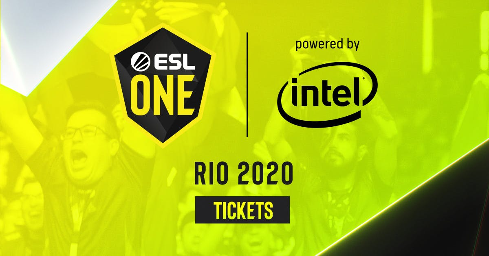

ESL One: Rio 2020
Se trata de un acontecimiento para toda Sudamérica. El ESL ONE: Río será este año la primera sede de un Torneo Major de Counter Strike en Latinoamérica. Lo que lo convierte, por derecho propio, es uno de los eventos de esports & gaming en Latam en 2020 a los que hay que hacer caso.
Por si fuera poco, han pasado más de 1.200 días desde que un equipo brasileño ganó un Major: el team MIBR en 2016.
El evento se celebrará en el Jeunesse Arena de la ciudad brasileña del 21 al 24 de mayo. Y repartirá un millón de dólares en premios entre los 24 equipos de participantes. Eso además de entrar en la lista de Masters del ESL Pro Tour.
Algunas actividades son:
- Sesiones de firmas
- Fan zone
- Fotografías